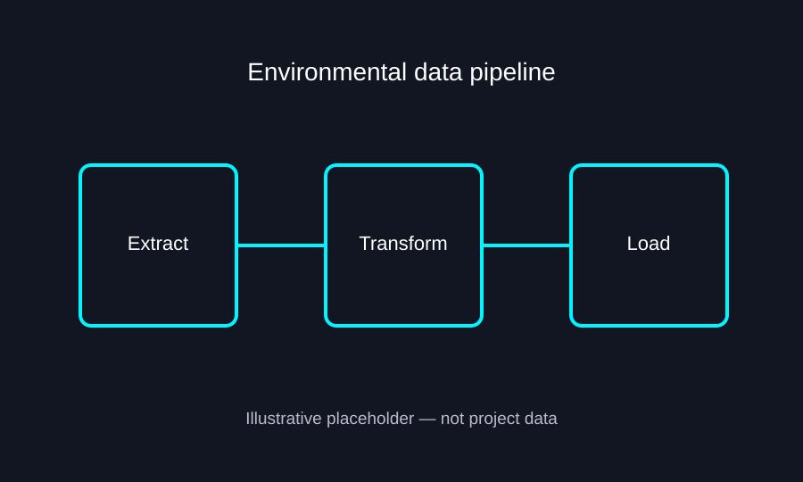

PROJECT CASE STUDY
Texas RRC — Full Wellbore & Production Data Integration
Python and SQL data engineering for legacy ASCII wellbore records, spatial entity matching, and production-data integration.
01IntroductionProblem and context
The Texas Railroad Commission (RRC) Full Wellbore dataset provides detailed regulatory records in a legacy ASCII flat-file format. Integrating those records with an existing team-provided Well Header dataset and separate production data required more than a straightforward table join: the datasets needed a reliable bridge between well identifiers and geographic locations.
I developed a Python- and SQL-based workflow to parse and organize the Full Wellbore records, associate identifiers with well locations, spatially match them to the existing Well Header data, and use the enriched headers to connect to production records.
02MethodologyLegacy parsing, spatial joins, SQL
Workflow at a glance
Follow the stages below, then read the detailed methodology.
Detailed methodology
1. Extract and interpret legacy flat files
I worked with the ASCII distribution of the Texas RRC Full Wellbore dataset. Although ASCII specifies the character encoding, the source also uses defined record layouts that must be interpreted to recover structured fields. Python-based parsing and transformation converted the relevant records into data suitable for subsequent joins and database-oriented processing.
2. Connect record keys to identifiers and coordinates
The workflow focused on RK02 records containing the district number, lease number, and well number—the three-part identifier used downstream—and RK13 records containing location information. Combining the relevant root-key information established a connection between the tripartite identifier and wellbore coordinates.
3. Spatially enrich the existing Well Header data
My team provided an existing Well Header dataset. I matched the wellbore location records against these headers using latitude/longitude proximity, enriching the header records with identifiers recovered from the Full Wellbore source. This geographic matching stage bridged datasets that could not initially be connected through a complete common key.
4. Join enriched headers to production data
Once the Well Header data contained the relevant district–lease–well identifier, I used SQL-based relational joins to associate those records with production data carrying the same tripartite key. Python supported the broader extraction, transformation, and spatial integration workflow, while SQL supported structured data management and integration.
5. Design for repeatable updates
The workflow was intended to be rerunnable as updated RRC data became available, with quarterly refreshes identified as a potential operating cadence. The design separates parsing, spatial matching, and relational integration so the stages can be repeated and checked rather than reconstructed manually each time.
Data quality considerations
Geographic proximity is useful for linking records but does not guarantee identity: multiple wellbores can be close together. Candidate matches therefore need validation, especially where nearby wells or inconsistent coordinates could introduce ambiguity. The exact matching tolerance and validation rules are not specified here pending review of the original scripts.
03FiguresIllustrative placeholder

PROJECT TAKEAWAYS
Why This Project Matters
Bridging legacy records, spatial data, and relational databases
Practical value
Linking regulatory wellbore records to existing well headers and production information creates a more usable foundation for oil and gas research. Repeatable extraction and integration also make it easier to incorporate future data releases without rebuilding the process from scratch.
Engineering skills demonstrated
This project combines legacy fixed-width flat-file interpretation, Python ETL, SQL relational joins, geospatial proximity matching, identifier reconciliation, and database-oriented workflow design. The central challenge was resolving entities across datasets that did not initially share a reliable direct join key.